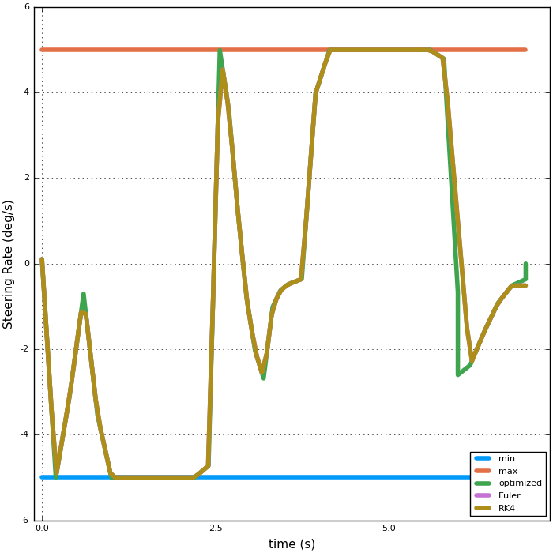
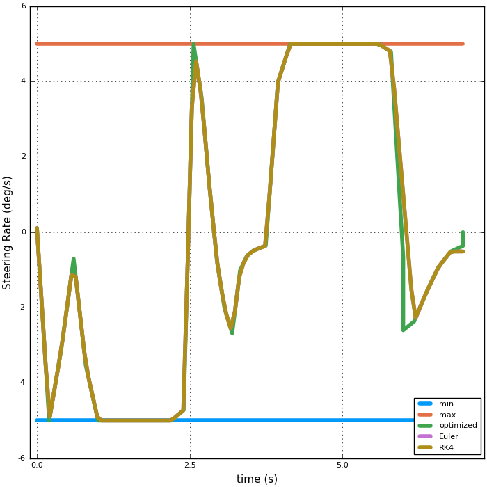

Three Degree of Freedom Model¶
In this example only the control signals (SR and Jx) are used to solve the differential equations using Euler and RK4 techniques and the results are compared to the optimized signals.
- Notes & Conclusions:
The differences between the optimized and the actual (using the differential equation solvers) are acceptable.
The animation simply demonstrates that the vehicles are avoiding obstacles:
The time scale is not correct, because there are different numbers of frames
It does not show the RK4 solution:
- It is almost exactly the same as the Euler solution

Taking a look at the states:

A closer look at the states and controls:


 



The tire forces are: